Module 01 — Initiation à PowerShell¶
La transcription du support Drive et l’aide pédagogique sont séparées pour rendre leur provenance explicite.
SOURCE DRIVE · TRANSCRIPTION DU SUPPORT
Le contenu des documents du dossier TSSR est transcrit ci-dessous, page par page. Les textes et tableaux sont intégrés à la page Web. Aucun fichier PDF, aucune diapositive entière ni aucune reproduction de page n’est affiché. Seuls des croquis ou visuels isolés et vérifiés peuvent accompagner la transcription. Les versions et les consignes restent celles des supports de formation. Les compléments IA sont conservés dans leur onglet distinct.
Support · Module 01 - Support de cours · 12 pages transcrites
Transcription du support du Drive. Les formulations historiques et les exemples du document sont conservés. Les valeurs d’accès du laboratoire sont indiquées comme « fourni par le formateur ». Les adresses de messagerie personnelles utilisent example.com.
Initiation à PowerShell
Module 01 – Présentation du langage PowerShell
Objectifs
- Appréhender le fonctionnement des commandes PowerShell
L’évolution de PowerShell dans le temps
- Sorti en 2006, PowerShell V1.0 était disponible sur les systèmes Windows XP Sp2, Vista et Windows Server 2003 Sp1.
- Cette première version apporte 129 commandes réparties sur 5 modules.
Un outil flexible, performant et totalement adapté aux besoins des
techniciens et admins !
- La version 5.1 est actuellement installée par défaut sur Windows 10 et Windows server 2019.
- Elle met à disposition 2855 commandes et supporte plusieurs milliers de modules par exemple « Azure », « Exchange »...
L’évolution de PowerShell dans le temps
- Chaque montée de version apporte :
- De nouvelles commandes (Cmdlets et fonctions)
- Des mises à jour de commandes existantes
- La disponibilité de nouveaux modules
- Des mises à jour de l’interpréteur PowerShell
- De grands éditeurs comme VMware, Cisco, Sonicwall, Veeam… ont développé des modules permettant de piloter leurs plateformes et produits depuis PowerShell.
PowerShell Core
- Depuis août 2016 et dans la lignée des Frameworks .NET deux ans auparavant, PowerShell est passé en Open Source.
- La montée en version de PowerShell Core suit les évolutions du Framework .NET Core Actuellement en version 3.0.
- PowerShell Core est actuellement en 7.0, les avantages de la versions Core sont :
- Une prise en charge multiplateformes.
- La possibilité de créer des modules personnels.
- ...
- …
PowerShell Core
- C’est une évolution majeure de Microsoft ces dernières années, démontrant une volonté d’ouverture vers d’autres environnements.
Plus de rivalité, aujourd’hui tout
le monde cohabite !
- D’autres exemples récents d’ouverture :
- L’intégration du Bash dans Windows 10
- SQL Server porté sur Linux
- L’ouverture vers le monde Linux dans Azure
- …
Les différentes versions de PowerShell Core
| Version | MacOS | Red Hat | CentOS | Oracle Linux | Fedora | Debian | Ubuntu | Open SUSE |
|---|---|---|---|---|---|---|---|---|
| PowerShell Core 7 | 10.13 | 8 | 8 | 7 | 32 | 9,10 | 20,04 | 42.2+ |
| PowerShell Core 6.1 | 10.12+ | 7 | 7 | - | 27,28 | 8.7+, 9 | 18.10 | 42.2+ |
Installable aussi sous Windows
à partir des versions 7 SP1,
2008 R2 et supérieur.
Les particularités PowerShell Core
- Pour les habitués de PowerShell sous Windows, Powershell Core nécessite quelques points d’attention :
- Pas de requêtes WMI ou CIM (propres aux systèmes Windows)
- Un certain nombre de commandes utilisant du WMI sont donc indisponibles
- Pas de planification de tâches via cmdlets
- Certains alias ne sont pas disponibles
- Utilisation du Remoting PowerShell impossible
- Sous Linux, on respecte la casse !
- Certaines incompatibilités sur des fonctions avec des scripts Windows
| Version | MacOS | RedHat | CentOS | Oracle Linux | Fedora | Debian Ubuntu OpenSUSE |
| PowerShellCore7 | 1013 . | 8 | 8 | 7 | 32 | 910 2004 422+ , , . |
| PowerShellCore61 . | 1012+ . | 7 | 7 | - | 2728 , | 87+ 9 1810 422+ . , . . |
| InstallableaussisousWindows | ||||||
| àpartirdesversions7SP1 , | ||||||
| 2008R2etsupérieur . | ||||||
| 7 |
Les Cmdlets
- Les commandes PowerShell sont toujours composées ainsi :
Verbe - Nom
Get-ChildItem
Get-Service
Get-Volume
Get-Process
Get-Item
Get-SMBShare- Elles sont « parlantes », il est facile de deviner leur utilité
Le nom sera toujours au singulier
Les Cmdlets
- Les commandes PowerShell disposent de paramètres nécessaires au bon fonctionnement de la commande :
PS > Get-LocalUser -Name « Nom de l’utilisateur recherché »- Le paramètre est systématiquement indiqué avec un tiret. Une commande peut disposer de plusieurs paramètres.
PS > Get-LocalGroupMember –Group « Nom du groupe recherché » -
Member « Membre du groupe recherché dans le groupe indiqué »- Dans cet exemple, deux paramètres pour une commande.
La valeur fournie aux paramètres est l’argument
Get-Command
- Get-Command permet de rechercher et d’afficher les commandes disponibles. La recherche se fait sur le paramètre –Name.
- On utilise le caractère * pour substituer une chaîne de caractères.
Exemple Je recherche toutes les commandes relatives à la gestion des services.
PS > Get-Command -Name *-ServiceLe résultat de la commande affiche toutes les « cmdlets » terminées par le nom « Service »
Get-Command
Get-Command permet également d’effectuer une recherche sur le
paramètre –Verb.Exemple Je recherche toutes les commandes utilisant le verbe « Stop ».
PS > Get-Command -Verb StopLe résultat de la commande affiche toutes les cmdlets dont le verbe d’action est « Stop »

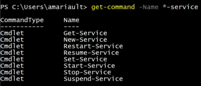

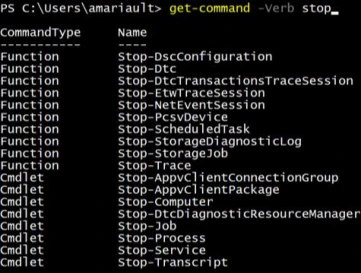
Get-Help
- Une fois la commande trouvée, il nous faut comprendre comment l’utiliser.
- La solution est bien connue, il faut lire le manuel.
- Toute Cmdlet comporte un manuel. Il est disponible avec la commande :
Get-Help suivi du paramètre –Name
« La Cmdlet concernée »
PS > Get-Help -Name Get-ServiceGet-Help
L’aide de la commande est affiché dans la console.
- Nous pouvons utiliser des paramètres supplémentaires afin d’améliorer les informations obtenues.
- L’aide des commandes est répartie en catégories. Le paramètre -Full permet d’afficher toutes les catégories disponibles dans l’aide d’une commande.
PS > Get-Help -Name Get-Service -Full- On obtient une aide complète plus détaillée avec des exemples d’utilisation de commande, une catégorie lien plus fournie.
PS > Get-Help -Name Get-Service -Full- Le paramètre -Online permet de suivre le lien fourni dans l’aide et de l’ouvrir dans un navigateur web. L’aide en ligne fournit la version la plus à jour avec des liens vers des commandes annexes.

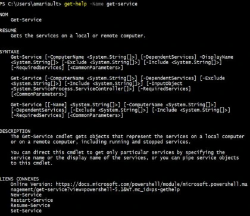
Get-Help
- Le paramètre -Examples permet d’afficher uniquement les exemples d’utilisation de la commande.
PS > Get-Help -Name Get-Service -Examples- Pour faciliter la lecture de l’aide, PowerShell met à disposition une fenêtre avec un champ de recherche. Cela permet de filtrer les catégories, copier- coller des exemples, etc.
PS > Get-Help –Name Get-Service -ShowWindowChamp de recherche
Get-Help
Personnalisation des
sections affichées
Aide dans une nouvelle fenêtre

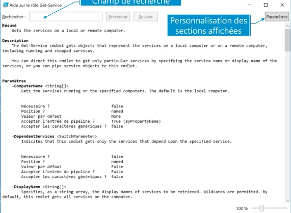
Update-Help
- Il est possible de mettre à jour l’ensemble des fichiers d’aide avec la commande :
PS > Update-Help- Sans paramètres, cette commande va tenter de chercher sur le web les mises à jour de l’aide en passant par le service Windows Update
- Dans le cas où le service serait inaccessible, il est possible d’indiquer une source locale contenant les fichiers d’aide.
PS > Update-Help –SourcePath D:\PowerShell- Il est également possible de choisir un langage.
PS > Update-Help –SourcePath D:\PowerShell –UICulture En-USCes commandes nécessitent un PowerShell avec les droits administrateur.
La commande de protection
- L’exécution de script est par défaut soumise à une forte restriction.
- Le niveau de confiance requis pour l’exécution est modifiable :
- Restricted (par défaut) Niveau de sécurité élevé
- AllSigned
- Remote Signed
Cette commande permet l’exécution de tous les scripts.
- Unrestricted Niveau de sécurité limité
- Bypass
- Default
- Undefined
PS > Set-ExecutionPolicy –ExecutionPolicy
UnrestrictedCes commandes nécessitent un PowerShell avec les droits administrateurs
Les modules
- Chaque Cmdlet provient d’un module PowerShell.
- Les modules PowerShell sont des fichiers portant l’extension .PSM1.
- La commande Get-Module permet de voir les modules actuellement disponibles dans PowerShell.
Les modules - Ajout
PS > $env:PsModulePath- Après la récupération d’un fichier PSM1 pour connaître l’emplacement disponible, il faut saisir la commande :
- Après la copie du fichier dans l’emplacement, on importe le module dans la console :
PS > Import-Module –Name « Le nom du dossier contenant le module »- Puis on vérifie l’importation :
PS > Get-Command –module « Le nom du module »Ces commandes nécessitent un PowerShell avec les droits administrateurs.
Il faut également modifier les droits d’exécution de script sur le système.

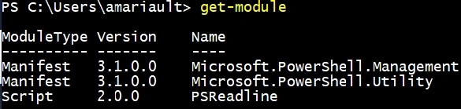

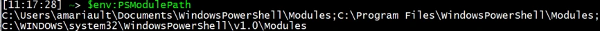
La personnalisation de la console
- Il est possible de modifier les propriétés de la console PowerShell en faisant un clic droit sur le bandeau puis en cliquant sur propriétés.
- La console se personnalise par le choix d’une police de la taille des caractères ainsi que des couleurs de caractères.
- Il est également possible de créer un profil personnalisé en saisissant la commande :
PS > New-Item –Path $Profile –Type File -Force- Cette commande écrit dans le dossier Documents de l’utilisateur actuel un fichier PS1 qui peut contenir des commandes qui seront exécutées à l’ouverture de la console PowerShell.
Découverte de PowerShell
TP

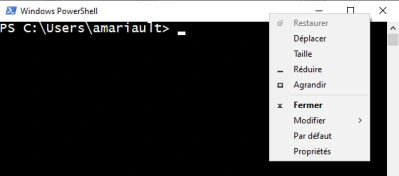

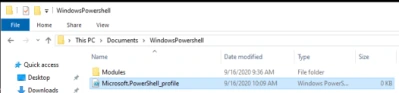
Conclusion
- Vous connaissez le fonctionnement des commandes PowerShell
Référence du document : 1_iY1RKpxTekTi-QKbupFI4pP_tK2LRI1 · SHA-256 648c293e26027e17…
Démonstration · Fiche démo 1 - Présentation du langage PowerShell-PowerShell Core · 2 pages transcrites
Transcription du support du Drive. Les formulations historiques et les exemples du document sont conservés. Les valeurs d’accès du laboratoire sont indiquées comme « fourni par le formateur ». Les adresses de messagerie personnelles utilisent example.com.
Présentation du langage PowerShell, PowerShell Core
Démonstration 01 du module 1
L’objectif de cette démonstration est de vous montrer comment installer PowerShell Core sur un système Windows 10.
Déroulement
- Récupérer l’archive d’installation sur le dépôt GitHub officiel PowerShell : https://github.com/PowerShell/PowerShell/releases
- Télécharger la version compatible avec votre plateforme actuelle.
- Réaliser une installation par défaut

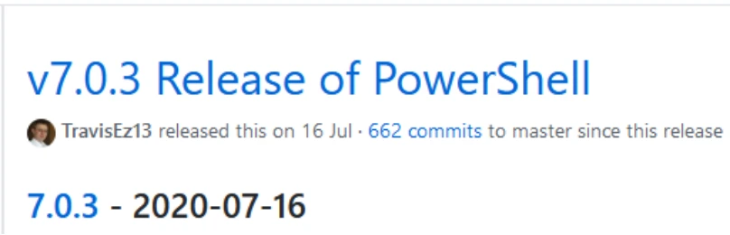

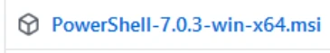

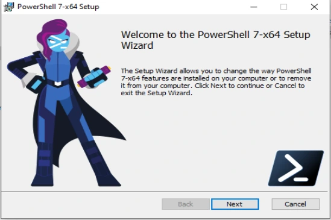
- Vous disposez d’un nouveau Shell reconnaissable à son icône et à l’en-tête de la console.
- La commande $PSVersionTable permet de connaître la version actuelle du Shell.
- La version de PowerShell installé par défaut est la 5.1 sur Windows 10.
- Elle est reconnaissable par l’icône :

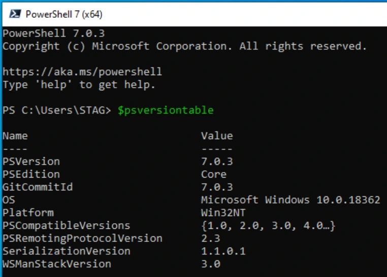

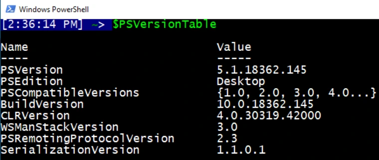
Référence du document : 1YxE6EJXvuIyx3sOVGFQdtbrkogxJDTwd · SHA-256 7b237af3ee799c19…
Démonstration · Fiche démo 2 - Les Cmdlets · 1 pages transcrites
Transcription du support du Drive. Les formulations historiques et les exemples du document sont conservés. Les valeurs d’accès du laboratoire sont indiquées comme « fourni par le formateur ». Les adresses de messagerie personnelles utilisent example.com.
Les Cmdlets
Démonstration 02 du module 1
L’objectif de cette démonstration est de vous faire découvrir la constitution d’une Cmdlet.
Déroulement
- Une Cmdlet est toujours constituée d’un Verbe définissant une action puis du caractère «-»
- Elle se termine toujours par un nom décrivant un objet Windows.
Pour obtenir la liste des verbes disponible on utilise la Cmdlet Get-Verb
Chaque Cmdlet dispose de paramètres ; ils s’utilisent en ajoutant le caractère « - » puis le nom du paramètre.

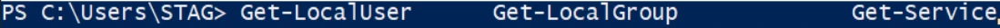

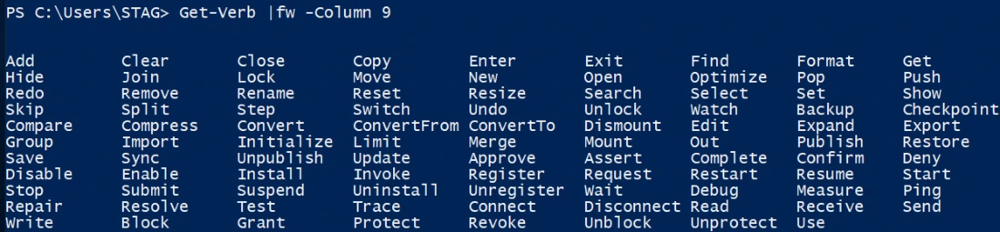

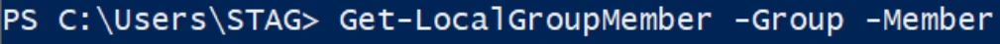
Référence du document : 1dI6jQ02IqlHIKSyHM0KpW0JOi1OtfI1s · SHA-256 85f9d555b636e5cf…
Démonstration · Fiche démo 3 - Get-Command · 2 pages transcrites
Transcription du support du Drive. Les formulations historiques et les exemples du document sont conservés. Les valeurs d’accès du laboratoire sont indiquées comme « fourni par le formateur ». Les adresses de messagerie personnelles utilisent example.com.
Get-Command
Démonstration 03 du module 1
L’objectif de cette démonstration est de vous présenter la commande Get-Command.
Déroulement
- Pour obtenir la liste de toutes les commandes disponibles, utiliser la Cmdlet Get-Command
Le nombre de commandes disponible est très important. Nous avons ici un aperçu des commandes disponibles.
Afin de filtrer le résultat de sortie, utiliser le caractère * sur le paramètre Name.
Pour filtrer les commandes sur le verbe d’action, utiliser le caractère * sur le paramètre verb.
Commandes visibles dans les captures
Get-Command
Get-Command -Name *-service
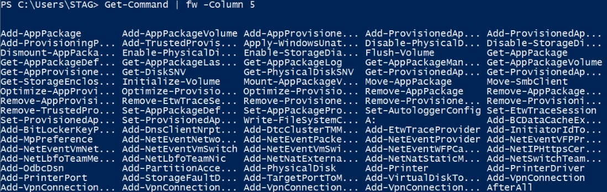

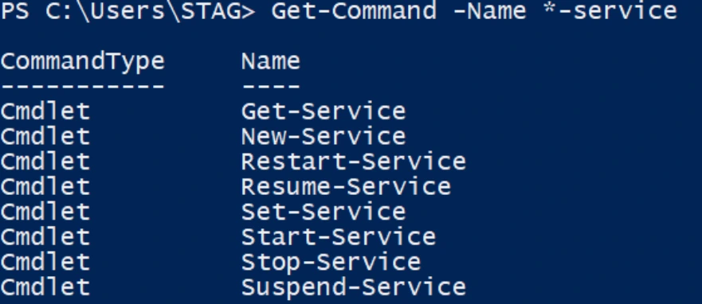
Nous avons toutes les commandes qui utilisent le verbe New.Commandes visibles dans les captures
Get-Command -Verb New
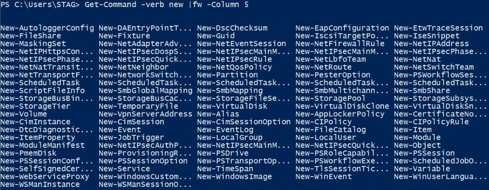
Référence du document : 12_QrHqEHxOQM1w2aNQ_TM7aV59-onssx · SHA-256 11db6cec8822a159…
Démonstration · Fiche démo 4 - Get-Help · 4 pages transcrites
Transcription du support du Drive. Les formulations historiques et les exemples du document sont conservés. Les valeurs d’accès du laboratoire sont indiquées comme « fourni par le formateur ». Les adresses de messagerie personnelles utilisent example.com.
Get-Help
Démonstration 04 du module 1
L’objectif de cette démonstration est de vous présenter la commande Get-Help.Déroulement
- Pour comprendre le fonctionnement d’une commande, on utilise la Cmdlet Get-Help suivie de la Cmdlet sur laquelle on souhaite obtenir de l’aide.
Le résultat dépend de plusieurs facteurs. En fonction de la langue du système d’exploitation, de la mise à jour des fichiers d’aide ainsi que de la commande, le contenu peut différer.
Ici nous avons un fichier d’aide très restreint. Il est possible, en fournissant des paramètres additionnels d’obtenir d’autres informations.
Le paramètre -Full permet d’obtenir la totalité de l’aide disponible.
Commandes visibles dans les captures
Get-Help Get-Command

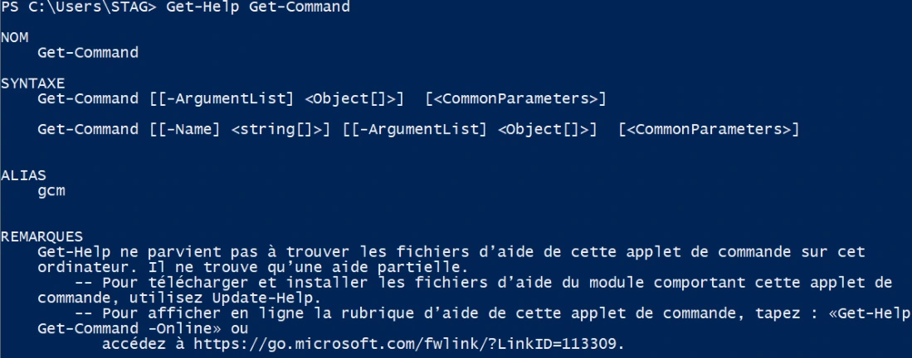
Le résultat est complet ; toutes les sections de l’aide sont affichées.
Pour améliorer la lecture, il est possible de spécifier le nom d’un paramètre ou d’une section.
Le paramètre -ShowWindow va ouvrir une nouvelle fenêtre et inclure les informations de l’aide. Il rajoute également un champ de recherche.
Commandes visibles dans les captures
Get-Help Get-Command -Full
Get-Help Get-Command -Parameter Verb
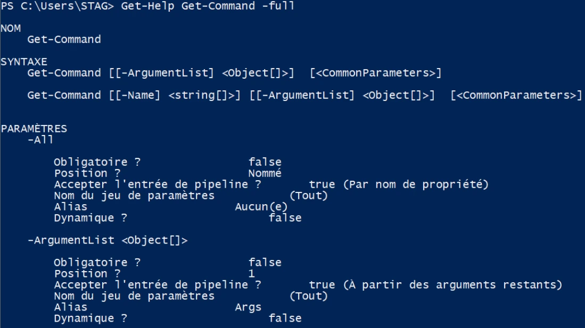

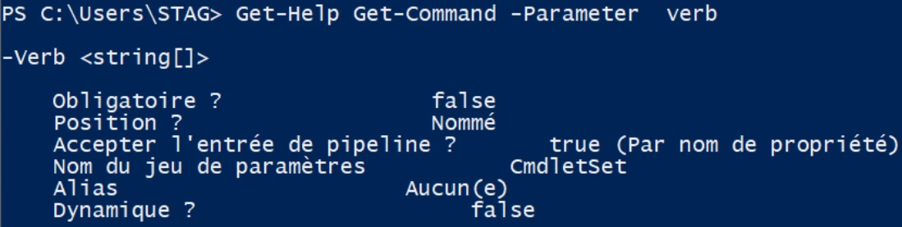
Pour obtenir la dernière version disponible, il est possible de consulter la version mise à disposition par Microsoft en ligne. Il faut toutefois disposer d’un navigateur web et d’une connexion à Internet autorisant l’accès au site Microsoft.
Commandes visibles dans les captures
Get-Help Get-Command -ShowWindow
Get-Help Get-Command -Online
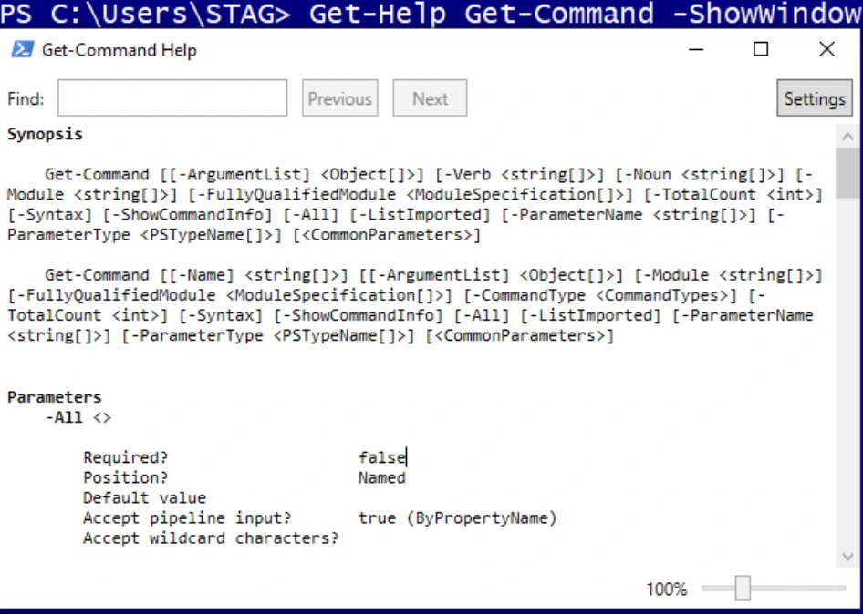

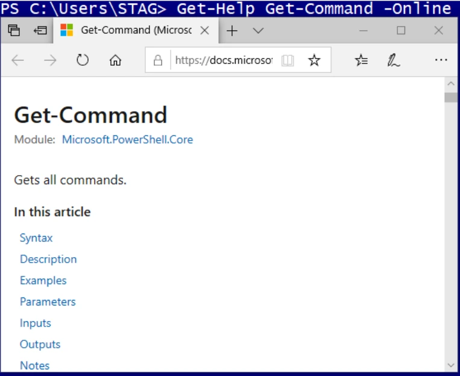
PowerShell dispose d’une aide sur ses propres fonctionnalités.
Les sections d’aide de la console PowerShell sont accessibles par la commande Get-Help, suivie du terme About_ puis de la section recherchée.
Commandes visibles dans les captures
Get-Help about_Command_Syntax
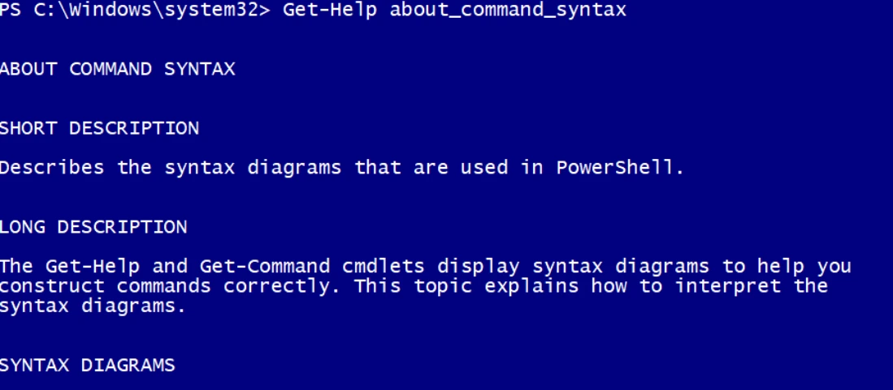

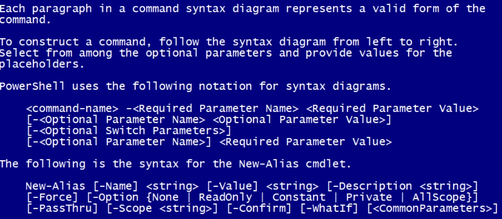
Référence du document : 1ZIjSGUvTZh_I7sTPGSqDuL_RLVWIfDGZ · SHA-256 8ec1b775fc0c7086…
Démonstration · Fiche démo 5 - Update-Help · 2 pages transcrites
Transcription du support du Drive. Les formulations historiques et les exemples du document sont conservés. Les valeurs d’accès du laboratoire sont indiquées comme « fourni par le formateur ». Les adresses de messagerie personnelles utilisent example.com.
Update-Help
Démonstration 05 du module 1
L’objectif de cette démonstration est de vous présenter la commande Update-Help.Déroulement
- Pour disposer de l’aide la plus à jour disponible, on utilise la commande Update-Help qui peut rechercher les fichiers d’aide disponibles à partir du service Windows Update ou d’une source locale.
La commande va rechercher sur les fichiers d’aide des commandes à disposition.
Update-Help nécessite une console PowerShell avec les droits
d’administration.
Il est possible d’indiquer une source locale ou un chemin réseau avec le paramètre
SourcePatch. Il est également possible de choisir la langue des fichiers d’aide disponibles.Pour obtenir des fichiers d’aide PowerShell, il est possible d’exporter ses fichiers avec la commande Save-Help.
Commandes visibles dans les captures
Update-Help
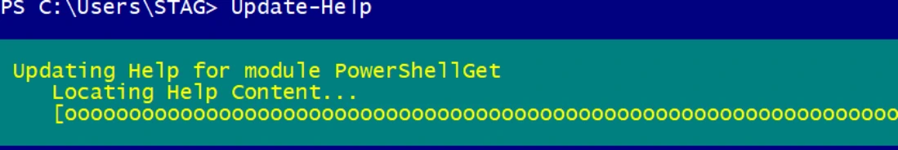


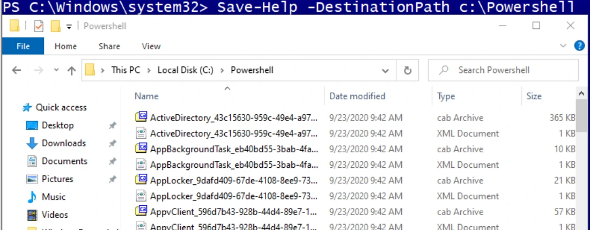

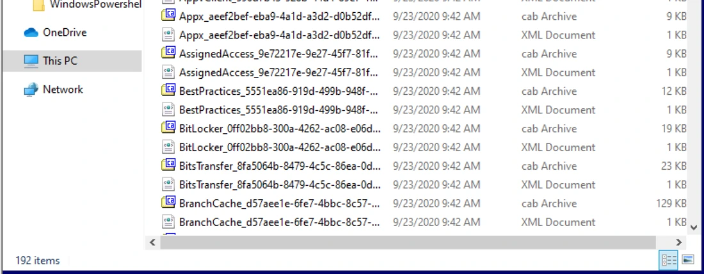
Référence du document : 1RICbdwT8fAe4J4-4kmb6gy3NmJTLmEwD · SHA-256 7d0ec37b5f85c6c4…
Démonstration · Fiche démo 6 - La protection · 1 pages transcrites
Transcription du support du Drive. Les formulations historiques et les exemples du document sont conservés. Les valeurs d’accès du laboratoire sont indiquées comme « fourni par le formateur ». Les adresses de messagerie personnelles utilisent example.com.
La protection
Démonstration 06 du module 1
L’objectif de cette démonstration est de vous présenter la protection contre l’exécution des scripts indésirables.
Déroulement
- Par défaut l’exécution de scripts PowerShell est restreinte aux scripts signés numériquement.
o Afin d’exécuter des scripts de test non signés, il faut modifier la règle de restriction desscripts du système Windows.
o Pour obtenir le niveau de restriction actuelle du système, on utilise la commande Get-
ExecutionPolicy.Set-ExecutionPolicy nécessite une console PowerShell avec les droits d’administration.
Pour modifier la restriction, on passe par la commande Set-ExecutionPolicy.
Une confirmation est demandée car il s’agit d’un paramètre de sécurité.
Commandes visibles dans les captures
Get-ExecutionPolicy
Set-ExecutionPolicy Unrestricted
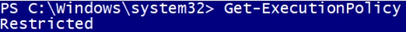

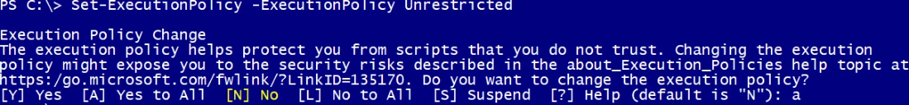
Référence du document : 1fD9YtRzs0KoafARjOehaE2oHA4iRHUsy · SHA-256 96ddc610aa3fa732…
Démonstration · Fiche démo 7 - Les modules · 2 pages transcrites
Transcription du support du Drive. Les formulations historiques et les exemples du document sont conservés. Les valeurs d’accès du laboratoire sont indiquées comme « fourni par le formateur ». Les adresses de messagerie personnelles utilisent example.com.
Les modules
Démonstration 07 du module 1
L’objectif de cette démonstration est de vous présenter la notion de module.
Déroulement
- Les modules sont des fichiers portant l’extension .PSM1
- La commande Get-Module permet d’obtenir la liste des modules actuellement disponibles dans la console.
Pour ajouter un module à la console PowerShell,l il faut ajouter le fichier PSM1 dans un emplacement valide. Pour connaître les emplacements valides, on utilise la commande :
$env :PsModulePathOn place ensuite le fichier PSM1 ou un dossier contenant un ensemble de fichiers.
Dans l’exemple, on utilise le module AWS permettant de gérer une infrastructure Amazon Web Services depuis la console PowerShell.
Commandes visibles dans les captures
Get-Module
$env:PSModulePath
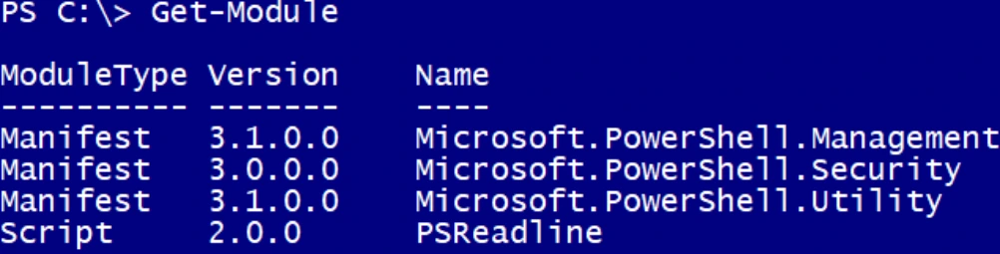

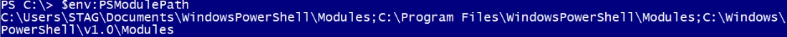
On importe ensuite le module dans la console avec la commande Import-Module.
On vérifie ensuite la bonne prise en charge avec la commande Get-Command -module AWSPOWERSHELL.
Le paramètre Measure-Object permet de compter le nombre de commandes.
Le module AwsPowershell ajoute presque 8000 commandes dans la console PowerShell.
Commandes visibles dans les captures
Import-Module -Name AWSPowerShell
Get-Command -Module AWSPowerShell | Measure-Object
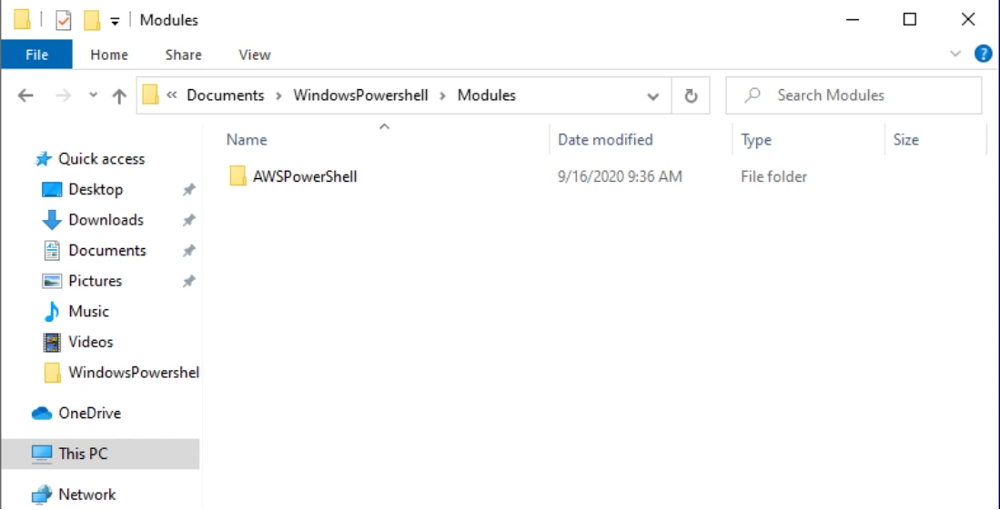


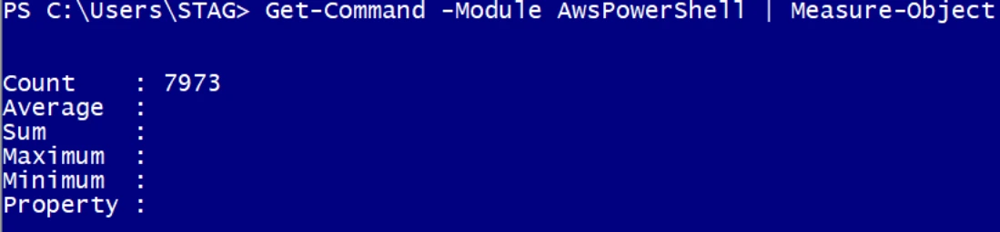
Référence du document : 1auDKYAA3_naumjziK-geVgf51NZMt3ng · SHA-256 ab0f08a2fd50e986…
Démonstration · Fiche démo 8 - La personnalisation de la console · 3 pages transcrites
Transcription du support du Drive. Les formulations historiques et les exemples du document sont conservés. Les valeurs d’accès du laboratoire sont indiquées comme « fourni par le formateur ». Les adresses de messagerie personnelles utilisent example.com.
La personnalisation de la console
Démonstration 08 du module 1
L’objectif de cette démonstration est de montrer que la console PowerShell peut s‘adapter aux besoins de chaque utilisateur.
Déroulement
- La personnalisation de la console PowerShell se fait en faisant un clic droit sur le bandeau de la fenêtre.
- Il est possible de modifier la police, la taille les couleurs de fond…

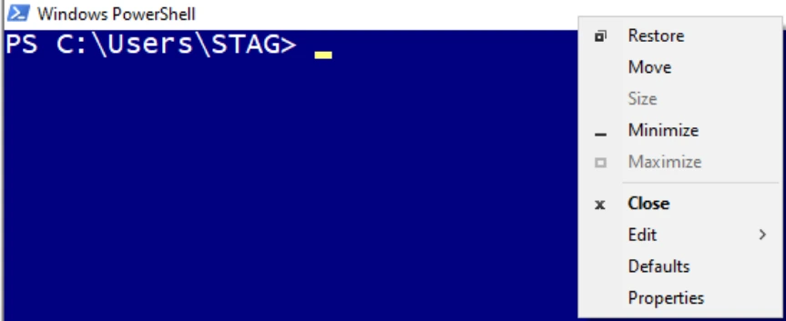
La personnalisation de la console peut se faire avec l’aide d’un profil qui est un script PowerShell. Ce script sera exécuté à chaque lancement de la console.
Pour générer le fichier de profil, on utilise une commande PowerShell.
Le fichier est généré dans le dossier documents de l’utilisateur actuel.
Chaque utilisateur dispose de son propre profil.

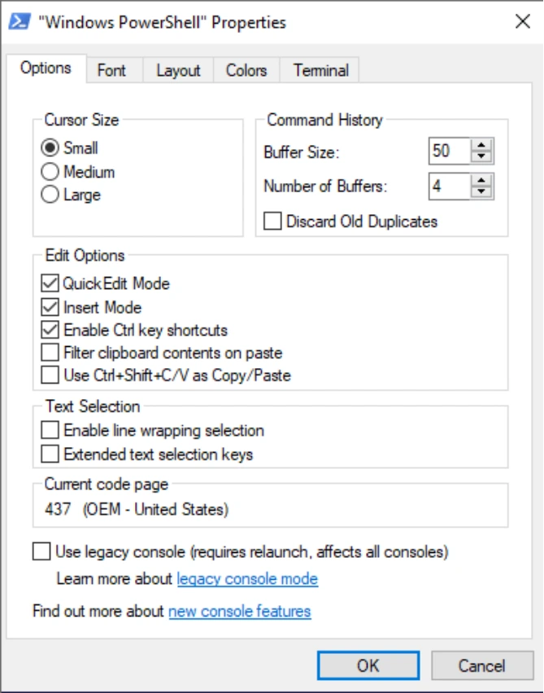

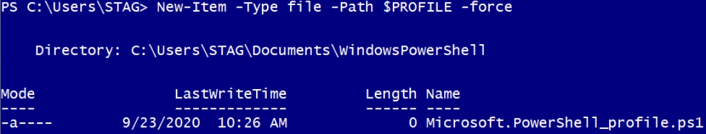
Dans cet exemple on personnalise la console avec un bandeau d’accueil qui affiche le nom de l’utilisateur actuel ainsi que l’heure est la date.
Il est également possible de modifier le Prompt.
Le résultat est un prompt personnalisé.

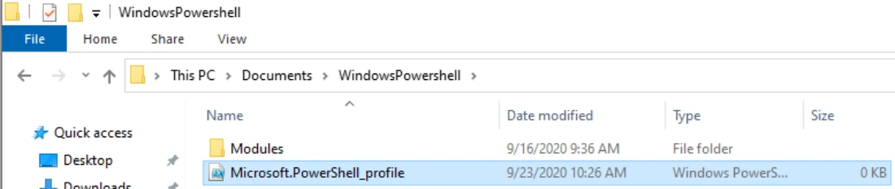

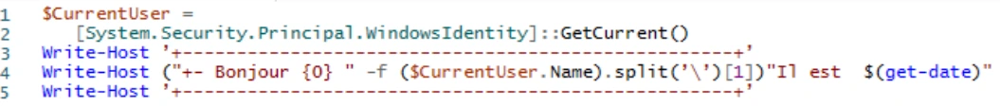

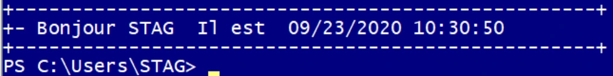

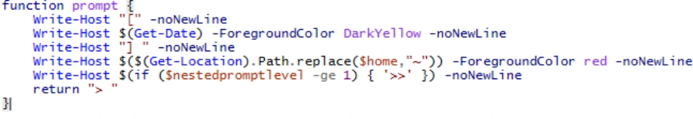

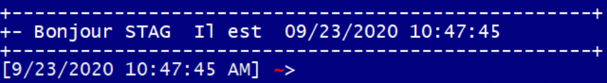
Référence du document : 13xgz6ZrucWrrpleg5N3Jd1rM4brh2R3u · SHA-256 c8b83fe89809ce20…
Énoncé · Énoncé du TP - Premières commandes · 5 pages transcrites
Transcription du support du Drive. Les formulations historiques et les exemples du document sont conservés. Les valeurs d’accès du laboratoire sont indiquées comme « fourni par le formateur ». Les adresses de messagerie personnelles utilisent example.com.
Initiation à PowerShell Premières commandes
TP du Module 01
Avant de démarrer ce TP, il convient d’avoir suivi les vidéos du module 1 de ce cours.
Durée estimée
2 heures
Énoncé
Objectifs :
Lancer des commandes PowerShell données
Analyser les différences de résultats d’exécution entre différents environnements
Prérequis :
Récupérer la maquette fournie par le formateur
Avoir une connexion internet
Consignes :
Décompresser la maquette fournie par le formateur
Intégrer les machines virtuelles dans VMware Workstation
Démarrer les machines virtuelles suivantes :
o
CLI01
o
CD01S’y connecter :
o
identifiant : Administrator@ad01.lcl
o
mot de passe : fourni par le formateurDepuis la machine CLI01 :
Lancez la console PowerShell en mode administrateur et découvrez l'interface utilisateur.
Exécutez la commande Get-Command | Measure. Indiquez le nombre de
commandes renvoyées par la propriété CountLancez la console PowerShell Core en mode administrateur et découvrez l'interface utilisateur.
Exécutez la commande Get-Command | Measure. Indiquez le nombre de
commandes renvoyées par la propriété Count.Affichez la liste des verbes disponibles dans chaque console PowerShell. Que remarquez-vous ?
Listez les commandes utilisant le verbe New. Quelle commande avez-vous utilisée ?
Listez les commandes contenant user dans le nom. Quelle commande avez-vous
utilisée ?Indiquez la commande permettant de créer un nouvel utilisateur local.
Listez les cinq premiers utilisateurs locaux de chaque machine virtuelle.
o
Utilisateurs de CD01
o
Utilisateurs de CLI01Bonus
Modifiez la description d’un utilisateur local sur « SRV01 » et « CLI01 ». Quelles commandes avez-vous utilisées ?
Depuis la machine CLI01
Affichez l’aide de la commande permettant de lister tous les services du système.
Affichez l’aide dans une nouvelle fenêtre. Indiquez la commande utilisée.
Affichez la totalité de l’aide disponible. Quelle commande avez-vous utilisée ?
Affichez l’aide en ligne de la commande permettant de lister les membres d’un groupe d’utilisateurs locaux. Quelle commande avez-vous utilisée, quels sont les avantages de l’aide en ligne ?
Mettez à jour les fichiers d’aide de votre console PowerShell.
o
Vous allez effectuer la mise à jour de toutes vos commandes à
partir d’un dépôt local situé sur « CD01 ».
o
Voici le chemin « UNC » du dépôt : \\CD01\Partage\Depot\
CLI01
o
Indiquez vos remarquesEffectuez la même action mais en sélectionnant le langage « fr-FR ». Indiquez vos remarques.
Depuis la machine CLI01
Affichez les modules actuellement chargés par la console PowerShell.
o
Combien de modules sont actuellement disponibles ?
o
De quel module la commande Get-LocalUser est-elle issue ?Affichez les emplacements disponibles pour déposer les fichiers contenant les modules. Quelle commande avez-vous utilisée ?
Installer le module AWSPowerShell. L’archive est disponible sur le partage \\CD01\ Partage\Modules
o
Quelles commandes avez-vous utilisées ?Vous allez obtenir un message d’erreur à l’importation du module
o
Quelle commande allez-vous exécuter pour permettre
l’importation du module ?
o
Indiquez trois commandes disponibles dans le module
AwsPowerShellMettez en place un profil personnel sur chaque console PowerShell.
o
Vous pouvez modifier la coloration ainsi que la police.
o
Affichez l’aide de la commande Get-Help à chaque
ouverture de la console PowerShell.
o
Quel fichier avez-vous édité ?Bonus
Modifiez le prompt de votre console PowerShell.
o
En vous basant sur le fichier \\CD01\Partage\Aplication\
Prompt.ps1
o
Modifiez votre prompt pour afficher l’heure ainsi que la
localisation actuelle du prompt dans le système de fichier.Vous pouvez également afficher une bannière avec le nom de l’utilisateur actuel.
Solution
Une solution est proposée pour ce TP sous la forme d'un PDF commenté, disponible dans les ressources à télécharger.
Référence du document : 17gKQ4X46H6zq3ZYZtll4gFhX-l7sTvaH · SHA-256 3c336006434e1b83…
Correction · Solution du TP - Premières commandes · 6 pages transcrites
Transcription du support du Drive. Les formulations historiques et les exemples du document sont conservés. Les valeurs d’accès du laboratoire sont indiquées comme « fourni par le formateur ». Les adresses de messagerie personnelles utilisent example.com.
Correction originale : à consulter après avoir tenté l’exercice.
Premières commandes
TP du Module 01
Avant de démarrer ce TP, il convient d’avoir suivi les vidéos du module 1 de ce cours.
Durée estimée
2 heures
Énoncé
Objectifs :
- Lancer des commandes PowerShell données
- Analyser les différences de résultats d’exécution entre différents environnements
Prérequis :
- Récupérer la maquette fournie par le formateur
- Avoir une connexion internet
Consignes :
- Décompresser la maquette fournie par le formateur
- Intégrer les machines virtuelles dans VMware Workstation
- Démarrer les machines virtuelles suivantes :
o CLI01
o CD01- S’y connecter :
o identifiant : Administrator@ad01.lcl
o mot de passe : fourni par le formateurDepuis la machine CLI01 :
- Lancez la console PowerShell en mode administrateur et découvrez l'interface utilisateur.
- Exécutez la commande Get-Command | Measure. Indiquez le nombre de commandes renvoyées par la propriété Count
2855
- Lancez la console PowerShell Core en mode administrateur et découvrez l'interface
utilisateur.
- Exécutez la commande Get-Command | Measure. Indiquez le nombre de commandes renvoyées par la propriété Count.
Admin 2825 / user 2796
- Affichez la liste des verbes disponibles dans chaque console PowerShell. Que remarquez-vous ?
Get-Verb (| measure)
PS = 98
PSCore = 100On remarque les verbes sont classés par groupe.
- Listez les commandes utilisant le verbe New. Quelle commande avez-vous utilisée ?
Get-Command -Verb New- Listez les commandes contenant user dans le nom. Quelle commande avez-vous utilisée ?
Get-Command -Noun *User*- Indiquez la commande permettant de créer un nouvel utilisateur local.
Get-command -Noun *localuser*- Listez les cinq premiers utilisateurs locaux de chaque machine virtuelle.
o Utilisateurs de CD01
Get-LocalUser | select -first 5
o Utilisateurs de CLI01Get-LocalUser | select -first 5
Bonus
- Modifiez la description d’un utilisateur local sur « SRV01 » et « CLI01 ». Quelles commandes avez-vous utilisées ?
Set-LocalUser -Name "AxelRios" -Description "Operateur"
Get-LocalUser -Name "AxelRios"Depuis la machine CLI01
- Affichez l’aide de la commande permettant de lister tous les services du système.
Get-Help Get-Service- Affichez l’aide dans une nouvelle fenêtre. Indiquez la commande utilisée.
Get-Help Get-Service -showwindow- Affichez la totalité de l’aide disponible. Quelle commande avez-vous utilisée ?
Get-Help Get-Service -full- Affichez l’aide en ligne de la commande permettant de lister les membres d’un groupe d’utilisateurs locaux. Quelle commande avez-vous utilisée, quels sont les avantages de l’aide en ligne ?
Get-Help Get-LocalGroup – OnlineAfficher les membres d'un groupe
Get-LocalGroupMember -Online- Mettez à jour les fichiers d’aide de votre console PowerShell.
o Vous allez effectuer la mise à jour de toutes vos commandes àpartir d’un dépôt local situé sur « CD01 ».
o Voici
le
chemin
«
UNC
»
du
dépôt
:
\\CD01\Partage\Depot\CLI01
o Indiquez vos remarques
Update-Help -Sourcepath \\CD01\Partage\Depot\CLI01\ -UICulture EN-USOn remarque que certains modules n’ont pas de fichier d’aide disponible.
- Effectuez la même action mais en sélectionnant le langage « fr-FR ». Indiquez vos remarques.
Update-Help -Sourcepath \\CD01\Partage\Depot\CLI01\ -UICulture fr-FROn remarque que très peu de modules disposent de fichiers d’aide traduits.

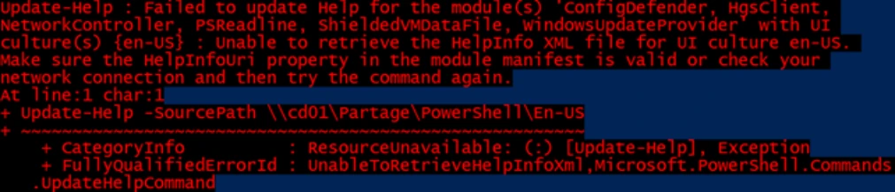

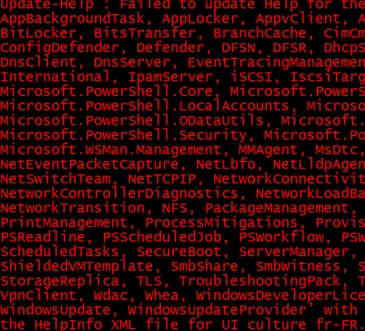
Depuis la machine CLI01
- Affichez les modules actuellement chargés par la console PowerShell.
Get-Module ou Get-module -all
o Combien de modules sont actuellement disponibles ?
Get-Module | measure
o De quel module la commande Get-LocalUser est-elle issue ?
get-command get-localuser
get-command get-localuser | ft wrap
get-command get-localuser | select module
>> Microsoft.PowerShell.LocalAccounts- Affichez les emplacements disponibles pour déposer les fichiers contenant les modules. Quelle commande avez-vous utilisée ?
Get-Help about_modules -showwindowOn cherche "Path"
#variable d'environnement :
$env:PSModulePathC:\Users\Administrator\Documents\WindowsPowerShell\Modules;C:\Program Files\WindowsPowerShell\Modules;C:\Windows\system32\WindowsPowerShell\v1.0\Mod ules
- Installer le module AWSPowerShell. L’archive est disponible sur le partage \\CD01\Partage\Modules
o Quelles commandes avez-vous utilisées ?- Vous allez obtenir un message d’erreur à l’importation du module
o Quelle
commande
allez-vous
exécuter
pour
permettre
l’importation du module ?
Import-Module AWSPowserShell
o Indiquez trois commandes disponibles dans le moduleAwsPowerShell
- Mettez en place un profil personnel sur chaque console PowerShell.
o Vous pouvez modifier la coloration ainsi que la police.
o Affichez l’aide de la commande Get-Help à chaque ouverturede la console PowerShell.
o Quel fichier avez-vous édité ?Microsoft.PowerShell_profile.ps1
Bonus
- Modifiez le prompt de votre console PowerShell.
o En
vous
basant
sur
le
fichier
\\CD01\Partage\Aplication\Prompt.ps1
o Modifiez votre prompt pour afficher l’heure ainsi que lalocalisation actuelle du prompt dans le système de fichier.
Vous pouvez également afficher une bannière avec le nom de l’utilisateur actuel.

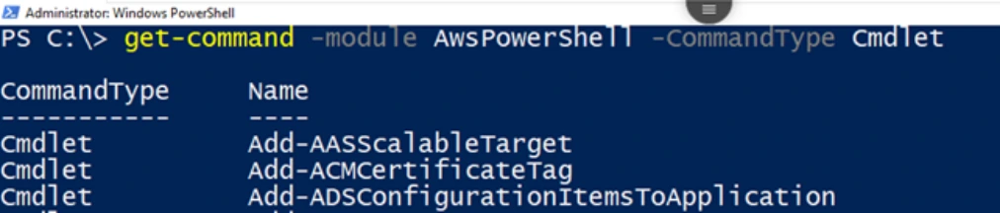

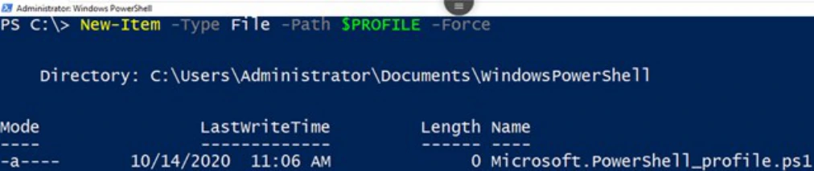
Solution
Une solution est proposée pour ce TP sous la forme d'un PDF commenté, disponible dans les ressources à télécharger.

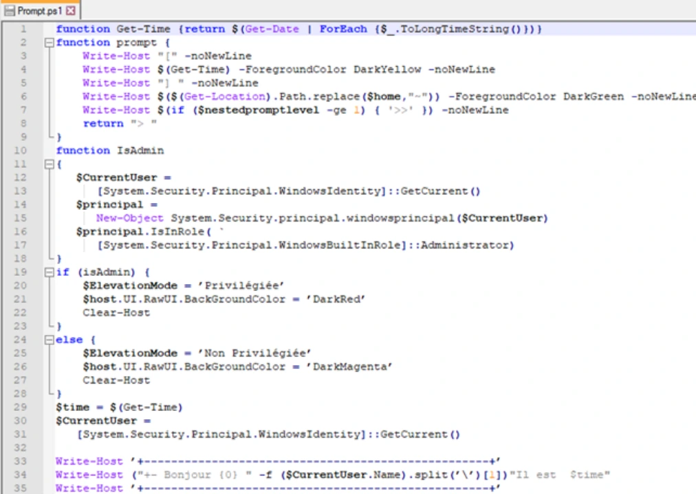

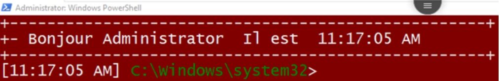
Référence du document : 1GrgQJ2ZZl4DDnJpqNjGT-BUvZ-b-ZDE7 · SHA-256 76a648d72c452e6f…
Complément IA / externe au cours — fiche pédagogique du portail
Cette fiche contient une reformulation et des aides d’apprentissage rédigées par IA. Elle est distincte de la transcription des documents du Drive et ne la remplace pas. Les schémas de synthèse de cette fiche sont des illustrations IA / externes au cours, sauf les captures explicitement attribuées à un document source.
Objectifs¶
À l'issue de ce module, vous devez pouvoir repérer la structure d'une cmdlet, rechercher une commande, consulter son aide et identifier les modules et le profil utilisés par une console PowerShell. Les comparaisons entre consoles et les résultats chiffrés restent liés au scénario de laboratoire du TP.
Repères historiques issus du support de formation¶
Le support situe PowerShell v1.0 en 2006 et évoque notamment Windows XP SP2, Vista et Windows Server 2003 SP1. Il présente également PowerShell 5.1 sur Windows 10 et Windows Server 2019, ainsi que des références à .NET Core 3.0 et PowerShell Core 7.0. Ces repères sont des informations historiques issues du support de formation : ils ne décrivent pas nécessairement l'état actuel des produits.
Le support distingue Windows PowerShell et PowerShell Core. Il associe à Core une prise en charge multiplateforme et signale, dans le contexte historique décrit, des différences possibles concernant certaines commandes, certains alias, le remoting, la casse sous Linux et la compatibilité de scripts Windows.
Les cmdlets : verbe, nom, paramètres et arguments¶
Le support présente une cmdlet sous la forme Verbe-Nom. Parmi les exemples
figurent Get-ChildItem, Get-Service, Get-Volume, Get-Process,
Get-Item et Get-SMBShare.
Un paramètre est introduit par un tiret ; la valeur fournie à ce paramètre est un argument. Les exemples suivants appartiennent au support :
Get-LocalUser -Name "Nom de l’utilisateur recherché"
Get-LocalGroupMember -Group "Nom du groupe recherché" -Member "Membre du groupe recherché dans le groupe indiqué"
La démonstration consacrée aux cmdlets utilise aussi Get-Verb pour afficher
la liste des verbes disponibles.
Rechercher des commandes avec Get-Command¶
Get-Command permet d'afficher les commandes disponibles. Le support illustre
une recherche sur le nom et une recherche sur le verbe :
Le TP demande notamment de comparer des environnements PowerShell, de compter
les commandes retournées et de rechercher les commandes utilisant New ou
contenant User. Les nombres observés dépendent de l'environnement de
laboratoire ; ils ne constituent pas des valeurs générales.
Get-Command | Measure
Get-Command -Verb New
Get-Command -Noun *User*
Get-command -Noun *localuser*
Get-LocalUser | select -first 5
Comprendre une commande avec Get-Help¶
Le support présente l'aide d'une cmdlet et plusieurs niveaux d'affichage :
Get-Help -Name Get-Service
Get-Help -Name Get-Service -Full
Get-Help -Name Get-Service -Examples
Get-Help -Name Get-Service -Online
Get-Help -Name Get-Service -ShowWindow
L'aide affichée peut varier selon la langue du système, la mise à jour des fichiers d'aide et la commande interrogée. L'aide en ligne suppose un navigateur et un accès Internet autorisé.
Formes documentaires à conserver
Le TP et sa correction emploient aussi Get-Help Get-Service -showwindow
et Get-Help Get-Service -full. Une divergence persiste pour l'aide liée
aux groupes locaux ; elle reste documentée dans la correction du TP plutôt
que corrigée silencieusement ici.
Mettre à jour l'aide¶
La source présente Update-Help pour rechercher des fichiers d'aide depuis les sources d’aide des modules ou depuis un dépôt local ou réseau. Save-Help est cité dans
la démonstration comme commande d'export des fichiers d'aide. Le support décrit la mise à jour avec des droits d’administration dans son environnement Windows PowerShell.
Update-Help
Update-Help -SourcePath D:\PowerShell
Update-Help -SourcePath D:\PowerShell -UICulture En-US
Save-Help
Dans le TP, la mise à jour s'appuie sur une ressource de laboratoire fournie par le formateur et peut être répétée avec une culture sélectionnée. Cette ressource ne fait pas partie des fichiers Drive M01.
Exécution de scripts et protection¶
La démonstration présente Get-ExecutionPolicy et Set-ExecutionPolicy. Le
support énumère les niveaux Restricted, AllSigned, RemoteSigned,
Unrestricted, Bypass, Default et Undefined, et montre la forme suivante :
Ces commandes et leurs niveaux de protection sont présentés selon le support de formation. Elles nécessitent les droits administrateur et ne constituent pas une consigne générale de modification de sécurité.
Modules PowerShell¶
Le support indique qu'une cmdlet provient d'un module et associe les modules à
l'extension .PSM1. Les emplacements de modules sont consultés avec la variable
d'environnement suivante :
Get-Module
$env:PSModulePath
Import-Module -Name "nom du dossier contenant le module"
Get-Command -Module "nom du module"
Le TP emploie un module AWS dans son scénario de laboratoire. Le module, l'archive et le partage de laboratoire cités ne sont pas disponibles dans le dossier Drive M01. Les variantes documentaires de son nom sont conservées dans la correction, sans normalisation.
Profil et personnalisation de la console¶
La console peut être personnalisée par ses propriétés graphiques, notamment la police, la taille et les couleurs. Le support montre la création d'un profil :
Le support décrit ce profil comme un fichier créé dans le dossier Documents de l'utilisateur actuel et exécuté à l'ouverture de la console. Le TP demande de mettre en place un profil et comporte un bonus de personnalisation du prompt à partir d'un script de laboratoire non fourni dans Drive M01.
Vérifications issues du TP¶
- comparer les résultats entre les consoles présentes dans le scénario, sans transformer les valeurs observées en règle générale ;
- relever les commandes, modules et emplacements effectivement affichés par l'environnement de laboratoire ;
- vérifier l'aide demandée avec la forme de commande indiquée par le TP ;
- utiliser les identifiants fournis dans l'environnement de laboratoire lorsque le scénario demande une connexion.
Choisir la console et interpréter les versions¶
La démonstration installe PowerShell 7.0.3 et compare son $PSVersionTable avec Windows PowerShell 5.1. Le premier présente PSEdition = Core et le second PSEdition = Desktop. Dans le support, la version 3.0 désigne .NET Core. Le tableau des systèmes pris en charge correspond à la période où la fiche a été rédigée. Les valeurs 129 commandes pour PowerShell 1.0 ou 2855 pour un poste 5.1 servent de repères historiques.
powershell.exe ouvre Windows PowerShell et pwsh ouvre PowerShell moderne lorsque les deux sont installés. Une commande peut manquer parce qu’un module, un rôle Windows ou une session particulière est nécessaire. La fiche d’origine indique que le remoting n’est pas disponible dans son contexte. PowerShell moderne prend en charge le remoting sur SSH et conserve des usages Windows avec WinRM. Documentation Microsoft sur le remoting SSH.
$PSVersionTable
Get-Verb
Get-Command -Name '*-Service'
Get-Command -Verb Stop
Get-Command -Verb New
Get-Command -Noun '*User*'
Get-Command | Measure-Object
L’astérisque représente une suite de caractères. Get-Command -Verb New cible le verbe. Get-Command -Noun '*User*' cherche dans le nom après le tiret. Pour expliquer un écart de comptage entre deux consoles, relever PSEdition, PSVersion et les modules chargés dans chacune.
Passer de la commande au bon exemple¶
Illustration IA / externe au cours — schéma pédagogique de synthèse.
Schéma pédagogique externe au cours.
La fiche Get-Help démontre les paramètres -Full, -Parameter Verb, -ShowWindow et -Online avec Get-Command. Les crochets de la syntaxe de l’aide signalent une partie facultative. about_Command_Syntax explique les conventions de lecture de ces lignes.
Get-Help Get-Command -Full
Get-Help Get-Command -Parameter Verb
Get-Help Get-Command -ShowWindow
Get-Help Get-Command -Online
Get-Help about_Command_Syntax
Get-Help Get-LocalGroupMember -Examples
Le TP demande d’identifier la commande qui liste les membres d’un groupe. Get-LocalGroupMember correspond à cette action. L’aide de Get-LocalGroup concerne l’objet groupe. L’Original et la correction conservent la différence observée entre les deux réponses du dossier. Référence de Get-LocalGroupMember.
Les fichiers d’aide sont associés aux modules. Save-Help les dépose dans un répertoire et Update-Help -SourcePath les lit depuis ce dépôt. Le choix en-US ou fr-FR ne produit des résultats que si le module fournit la culture demandée. À partir de PowerShell 6.1, la portée utilisateur est disponible et utilisée par défaut. L’installation dans les répertoires système conserve ses exigences de droits. Référence de Update-Help.
Save-Help -DestinationPath 'C:\PowerShell'
Update-Help -SourcePath 'C:\PowerShell' -UICulture en-US
Get-ExecutionPolicy -List
Get-Module
Get-Module -ListAvailable
$env:PSModulePath
Le support compare Restricted, AllSigned, RemoteSigned, Unrestricted et Bypass. La stratégie active dépend de sa portée. Une stratégie de groupe a priorité sur les réglages de la session et du poste. L’exemple historique passe à Unrestricted pour illustrer l’effet d’un changement. Pour le TP, lire le résultat de Get-ExecutionPolicy -List avant d’expliquer la stratégie effective. Règles de stratégie d’exécution.
Charger un module et retrouver son profil¶
Get-Module montre les modules de la session. Get-Module -ListAvailable cherche dans les emplacements référencés par PSModulePath. Une implémentation de module peut utiliser un script .psm1, un manifeste .psd1 ou un assembly. Le support montre l’import d’AWSPowerShell et compte les commandes exportées. Ce total varie selon la version du module.
Import-Module -Name AWSPowerShell
Get-Command -Module AWSPowerShell | Measure-Object
Get-Command -Module AWSPowerShell -CommandType Cmdlet | Select-Object -First 3
$PROFILE
Test-Path -LiteralPath $PROFILE
Les propriétés de la console règlent son apparence. Le profil est un script exécuté au démarrage d’un hôte. La démonstration y affiche le nom et l’heure, puis redéfinit prompt. Un profil peut être différent entre Windows PowerShell, PowerShell moderne et le terminal de l’éditeur. Vérifier son chemin avant de l’éditer.
Mini-quiz¶
- Quelle commande distingue les éditions Desktop et Core ?
- Quel paramètre de
Get-CommandrechercheStopcomme verbe ? - Pourquoi le nombre de commandes change-t-il entre deux consoles ?
- Quelle commande liste les portées de stratégie d’exécution ?
Réponses
$PSVersionTablecontientPSEditionetPSVersion.-Verb Stop.- Les versions, les modules et les rôles disponibles diffèrent.
Get-ExecutionPolicy -List.
Travaux pratiques et révision¶
M01 — Initiation à PowerShell
20 questions
Teste tes connaissances sur ce module.